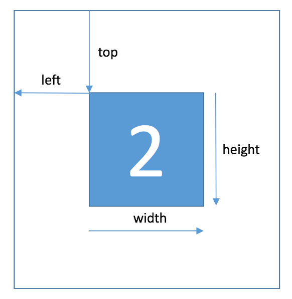

本文属于学习帖，用于记录“街景字符编码识别”问题的 baseline 解决方案。原代码链接见文末，其中有些小的错误已更正。
赛题来源自Google街景图像中的门牌号数据集（The Street View House Numbers Dataset, SVHN），并根据一定方式采样得到比赛数据集。
训练集数据包括3W张照片，验证集数据包括1W张照片，每张照片包括颜色图像和对应的编码类别和具体位置；测试集A包括4W张照片，测试集B包括4W张照片。
本赛题需要选手识别图片中所有的字符，为了降低比赛难度，我们提供了训练集、验证集和测试集中字符的位置框。

一个比较有效的方法是先对字符做检测（使用目标检测技术），但这里仅使用baseline方案。
baseline解决方案是将其转为定长字符识别问题。
具体来说，所有字符的最大长度不超过6位，因此将不足6位的字符填充到6位。因为所有字符全部取值为0到9共10个数字，所以用10作为填补的标记，
字符总长度不足6位的样本用10进行填补。
导入相关库+必要设置
1 | import numpy as np |
准备数据

1 | class SVHNDataset(Dataset): |
训练集数据：
1 | train_path = glob.glob('mchar_train/*.png') |

1 | train_loader = torch.utils.data.DataLoader( |

验证集数据：
1 | val_path = glob.glob('mchar_val/*.png') |
模型构建
这里使用了resnet18预训练好的模型。
全连接层的输出维度是11，分别表示输出为0到10的得分。
6个全连接层对应了所有字符的最大长度：6.
1 | class SVHN_Model1(nn.Module): |
其中AdaptiveAvgPool2d用法举例如下
可以看出，只要将参数设置为1 ，那么无论输入的特征图尺寸是多少，输出的特征图结果都是$1*1$。
模型训练相关
训练函数
1 | def train(train_loader, model, criterion, optimizer, epoch): |
验证函数
1 | def validate(val_loader, model, criterion): |
预测函数
1 | def predict(test_loader, model, tta=10): |
设置训练参数
1 | model = SVHN_Model1().to(device) |
开始训练
1 | for epoch in range(10): |
np.vstack用法示例如下
测试
准备测试数据
1 | test_path = glob.glob('mchar_test_a/*.png') |
开始测试，代码和训练部分类似
1 | test_predict_label = predict(test_loader, model, 1) |
测试完成后，test_label_pred中便存储了最终的预测结果，将其写入.csv作为提交文件
1 | import pandas as pd |
提交结果
点击上传文件，得到成绩